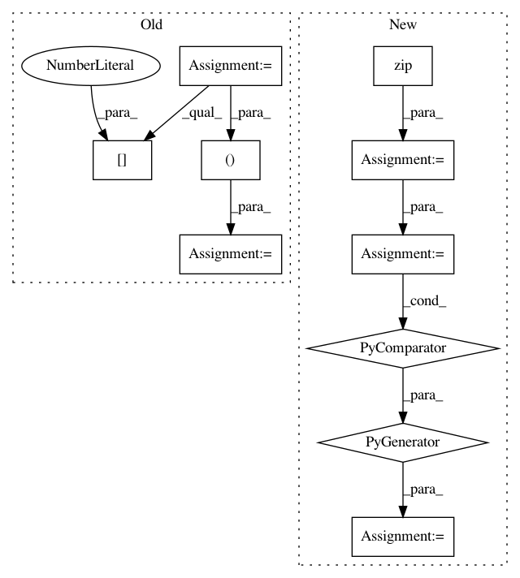

289c3bd43be7cc0ca14bb505611f1f84e0e53c4a,theano/tensor/nnet/tests/test_abstract_conv.py,BaseTestConv2d,get_output_shape,#BaseTestConv2d#Any#Any#Any#Any#Any#,114
Before Change
def get_output_shape(self, inputs_shape, filters_shape,
subsample, border_mode, filter_dilation):
dil_filters = ((filters_shape[2] - 1) * filter_dilation[0] + 1,
(filters_shape[3] - 1) * filter_dilation[1] + 1)
if border_mode == "valid":
border_mode = (0, 0)
if border_mode == "half":
border_mode = (dil_filters[0] // 2,
dil_filters[1] // 2)
if border_mode == "full":
border_mode = (dil_filters[0] - 1,
dil_filters[1] - 1)
batch_size = inputs_shape[0]
num_filters = filters_shape[0]
return ((batch_size, num_filters,) +
After Change
class BaseTestConv(object):
def get_output_shape(self, inputs_shape, filters_shape,
subsample, border_mode, filter_dilation):
dil_filters = tuple((s - 1) * d + 1 for s, d in zip(filters_shape[2:],
filter_dilation))
if border_mode == "valid":
border_mode = (0,) * (len(inputs_shape) - 2)
if border_mode == "half":
border_mode = tuple(d // 2 for d in dil_filters)
if border_mode == "full":
border_mode = tuple(d - 1 for d in dil_filters)
batch_size = inputs_shape[0]
num_filters = filters_shape[0]
In pattern: SUPERPATTERN
Frequency: 3
Non-data size: 10
Instances
Project Name: Theano/Theano
Commit Name: 289c3bd43be7cc0ca14bb505611f1f84e0e53c4a
Time: 2016-10-11
Author: gvtulder@gmail.com
File Name: theano/tensor/nnet/tests/test_abstract_conv.py
Class Name: BaseTestConv2d
Method Name: get_output_shape
Project Name: gboeing/osmnx
Commit Name: fe8f96e9981376e26984bfa4812916d14856dc05
Time: 2020-11-18
Author: boeing@usc.edu
File Name: osmnx/distance.py
Class Name:
Method Name: get_nearest_edge
Project Name: gboeing/osmnx
Commit Name: c46a77985576103fc92ac95395f4d8410f56f029
Time: 2020-12-02
Author: boeing@usc.edu
File Name: osmnx/distance.py
Class Name:
Method Name: get_nearest_edge